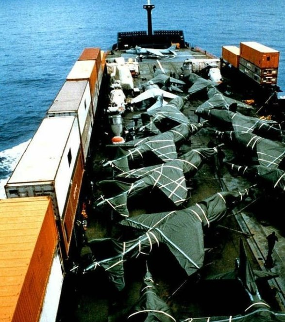
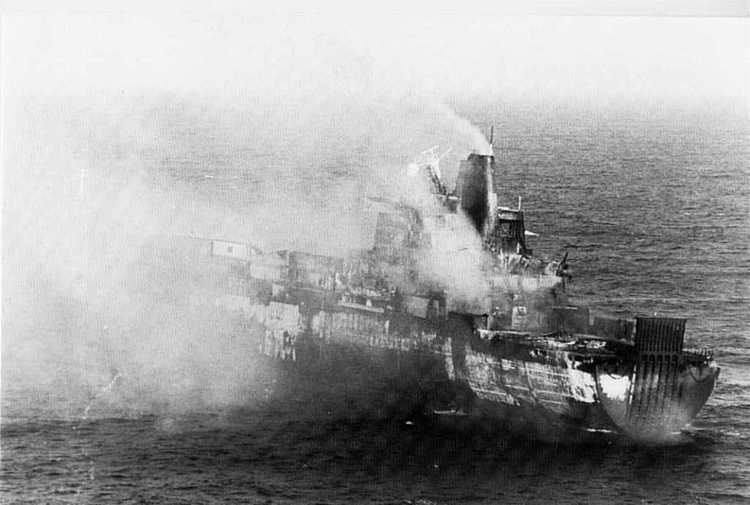
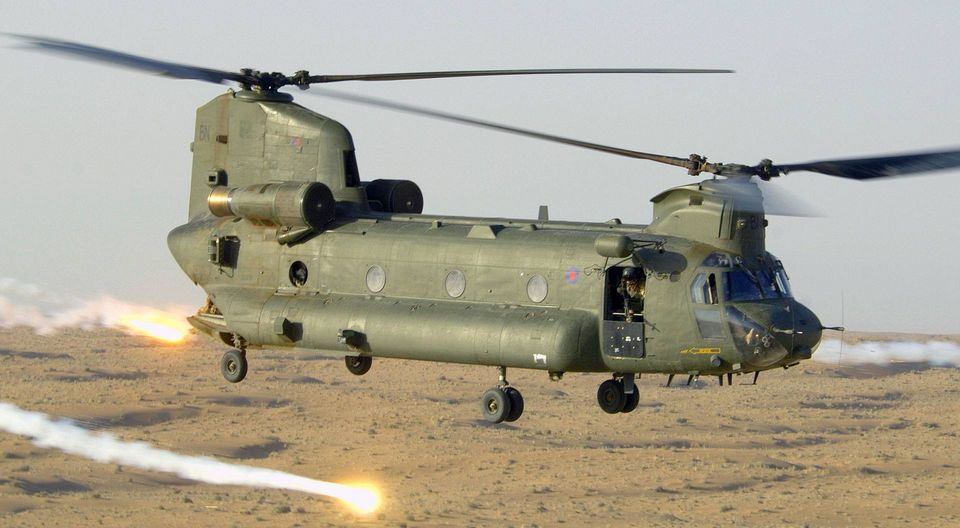
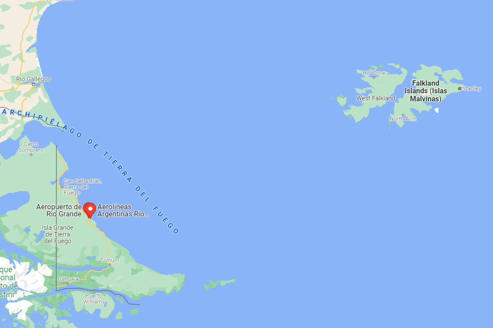
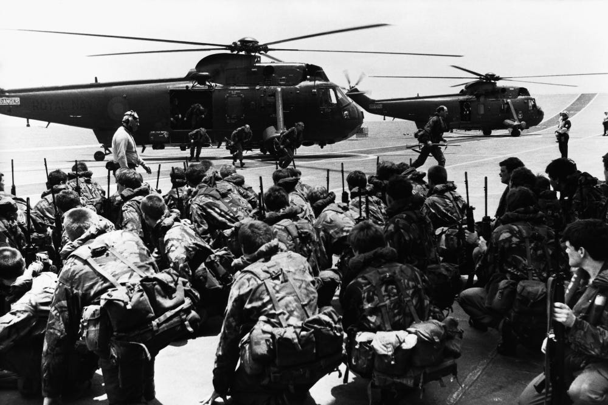
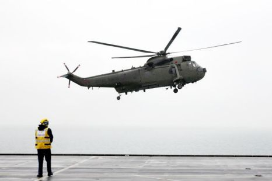
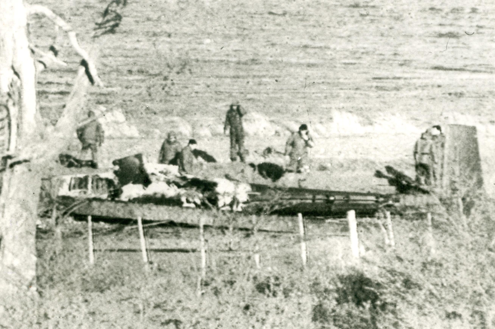
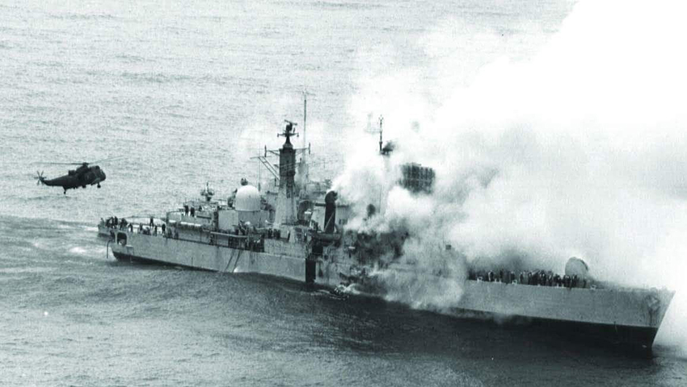
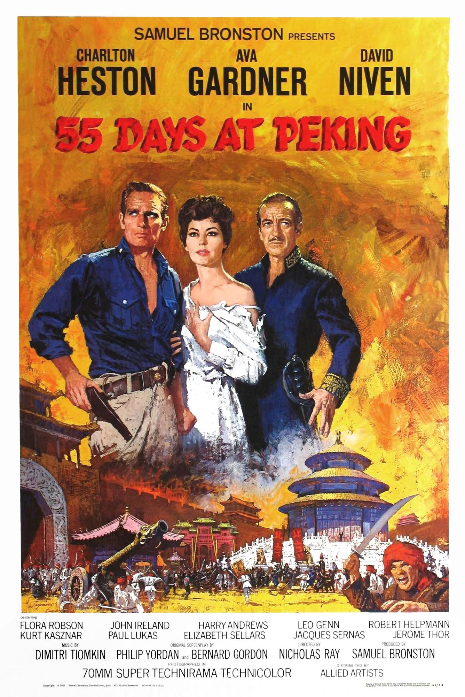
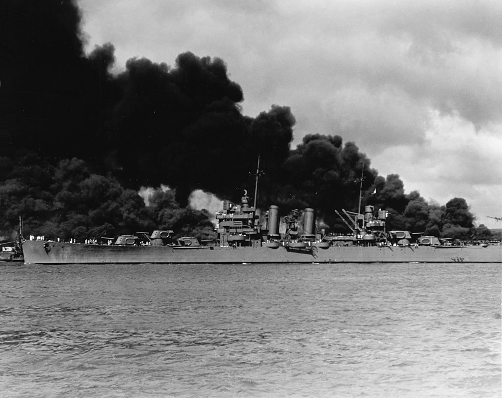

포클랜드 전쟁 잡담 (10/14)
게시: 2021-10-14T18:21:43+09:00
<산전수전공중전> 1982년 포클랜드 전쟁 때 징발되어 임시 항공모함이랍시고 전쟁터로 보내진 SS Atlantic Conveyor는 원래 컨테이너선으로서, 최소한의 개조만 한 뒤 일종의 'ferry용 aircraft carrier'로 파견되었던 선박. 적재했던 Harrier 전투기나 헬리콥터들은 '바나나 포장'이라는 고무재질로 만든 커버를 씌워 선창에 보관했었음 (사진1). 다만 1대의 해리어 전투기와 두어대의 헬리콥터는 당장 쓰기 위해 갑판 위에 꺼내놓고 이착륙을 시키고 있었음.
이 선박에 아르헨티나 공군의 엑조세 미사일이 날아와 꽂혔을 때 공중에 떠있던 것은 Chinook 1대와 Westland Wessex 1대, 총 2대의 헬기 뿐. 14대의 해리어 전투기들은 미리 다른 항모에 다 날려보낸 뒤라 살렸으나, 나머지 헬기들은 모조리 애틀랜틱 컨베이어와 함께 꼬로록 (사진2). 이때 살아남은 시누크가 기체번호 ZA718, 기체에 새겨진 식별번호 BN (phonetic alphabet으로는 Bravo November, 사진3). 보통 브라보-노벰버로 알려진 이 시누크는 포클랜드에서 영국군의 손발 노릇을 톡톡히 했을 뿐만 아니라 이후 영국의 모든 주요 전투, 즉 이라크전과 아프간전에 모두 참가.
원래 1978년 영국공군이 최초로 시누크를 도입할 때 주문된 오리지널 시누크였는데 이후 개장을 거쳐 아직도 현역으로 쓰고 있다고. ** 이 할배 앞에서 산전수전공중전 드립 치지 말 것.
  
<전설적인 영국 SAS 코만도가 하면 역시 다르다> 1982년 포클랜드 전쟁 때, 영국 원정함대에게 가장 큰 위협은 Rio Grande 공군기지에서 날아오는 아르헨티나 Super Etendard 전투기들. 영국 정보부는 이 곳에 엑조세 대함 미쓸 5발이 보관되어 있다는 것까지 확인. 조기 경보기도 없고 요격 성능이 시원찮은 Harrier 함재기만 가진 영국 원정함대가 이걸 막아내기는 매우 어렵다는 것이 영국군 자체 판단. 그래서 해결책은? 영국에게는 조기경보기는 없지만 대신 SAS 코만도가 있었음. 얘들을 리오 그란데 공군기지 인근에 낙하시켜 얘들이 쉬페르 에땅다르 전투기들과 엑조세 미사일들을 폭탄으로 파괴하는 것으로 작정. 이른바 Operation Mikado. 근데 이걸 하려면 일단 현장 상황이 어떤지 미리 파악을 해봐야 하므로 그 정찰 작전인 Operation Plum Duff를 감행. 8명의 SAS 코만도 대원들이 Sea King 헬리콥터를 타고 항모 HMS Invincible에서 출발하여 리오 그란데 공군기지 인근에 내려, 몰래 관측소를 구축하고 코만도 본대를 유도하는 것이 목표. 근데 깜깜한 밤중에 안개낀 바다 및 해안가를 날아가는 것이 쉽지 않음. 가다보니 해양 유전이 나타나기도 하고 해서 이리저리 우회하다보니 현재 위치가 어딘지에 대해 헬리콥터 조종사와 SAS 지휘관의 의견이 불일치. 그래서 결국 원하는 곳에 내리지 못하고 제2 지정 장소에 내림. 여긴 리오 그란데 공군기지보다 칠레 국경에 더 가까운 곳. 근데 걸어서 거기까지 가다보니 너무 힘듬. 각자 등에 50~60kg의 짐을 들고 바위 투성이 산악지대를 걷는 것이 생각한 것과는 딴판. 게다가 가다보니 대원 중 한명이 뭘 잘못 먹었는지 격렬하게 아프다고 함. 그래도 굴하지 않고 사정이 허락하는 한 열심히 걸음. 그러나 결국 포기. 이유는? 이 속도로 가다보면 현지에 도착하기 전에 식량이 다 떨어질 판이라는 결론이 났기 떄문. 결국 이 양반들 뒤로 돌아서 칠레 국경을 넘어선 뒤 민간인 옷으로 갈아입고 영국 정보원 만나서 귀국.
 
<Operation Plum Duff의 블랙 코미디> 근데 밀덕 상식이 있으신 분들은 Operation Plum Duff에 대해 의문을 가지실 것이, 포클랜드에서 남미 대륙 끝 부분의 리오 그란데 공군기지까지 왕복이 가능할 정도로 Westland Sea King 헬리콥터의 전투 반경이 충분한가 하는 부분. 더군다나 승무원 3명 외에 각자 60kg씩의 장비를 떠맨 코만도 8명을 태우고? 당연히 안 됨. 그래서 이건 전함 야마토처럼 원웨이 티켓을 끊은 임무. 그렇다고 무식하게 야마토처럼 가서 죽으라는 것은 아니었고 코만도를 떨구고나면 그대로 칠레로 월경해서 적당한 해변에 헬기를 수장시킨 뒤 민간인 복장으로 갈아입고 칠레 현지의 영국 정보원과 만나서 귀국하라는 것. 실제로 일단 코만도를 떨군 뒤, 헬리콥터는 무사히 칠레로 넘어가 인적없는 해변에 착륙. 여기서 승무원들 둘은 해변에 남고, 조종사만 다시 헬리콥터를 몰고 앞바다에 착륙하여 수장시킨 뒤 고무 보트 타고 해변으로 돌아오기로 함. 그를 위해 헬기 바닥에 열심히 구멍을 뚫음. 근데 막상 바다 위에 착륙했는데도 구멍이 너무 작아서 그런지 영화에서 본 것과는 달리 이 놈의 헬기가 가라앉지를 않음. 어쩔 수 없이 조종사는 해변에서 기다리는 2명의 승무원들과 함께 헬기 바닥에 구멍을 더 뚫기 위해 다시 헬기를 이륙시켜 해변으로 몰고옴. 근데 '뭐야 저거 왜 다시 와?' 하며 벙찐 승무원들 눈 앞에서 해변에 쾅 하고 불시착. 알고보니 이제 'Low on fuel 경고등'이 들어오는 바람에 야시경을 낀 조종사가 그 경고등 불빛에 눈이 부셔서 착륙을 제대로 못한 것. 넋이 나간 조종사를 끌어낸 뒤 이 셋은 결국 그냥 해변에 주저앉은 헬기에 폭탄을 설치하고 불을 지른 뒤 ㅌㅌㅌ 도주. 이들은 영국 대사관을 찾아가기로 했는데 거지꼴로 마을을 헤매다 뒤를 쫓은 칠레군에게 잡힘. 칠레군은 사정을 딱하게 여겨 이들을 영국 대사관에 데려다 줌. ** 사진1이 Westland Sea King 헬리콥터 ** 사진2가 그 헬기의 잔해를 살펴보는 칠레군
 
<Operation Mikado와 북경의 55일> 정찰 작전인 Operation Plum Duff의 웃기는 결말과는 별도로, 아르헨티나 공군 기지의 엑조세 미사일과 쉬페르 에땅다르 전투기를 폭파한다는 본 작전 Operation Mikado는 계속 추진. 그러나 결국 취소. 이유는? 계획을 짜던 중에 아르헨 공군이 엑조세 미사일 5발을 다 발사했기 때문. 물론 HMS Sheffield를 포함해 여러 척의 군함들이 그것에 얻어맞고 침몰한 뒤였음. 근데 가장 중요한 부분은 이 작전 전체가 모조리 불법이라는 것. 전쟁에 불법이 어디 있냐? 있음. 당시 (많은 이들이 오해하는데) 영국과 아르헨티나는 서로에게 전쟁을 선포하지 않았고 따라서 영국이 일방적으로 선포한 전쟁 구역 (Total Exclusion Zone) 밖인 아르헨티나 본토에서 영국군이 (아무리 군복을 입고 있다고 해도) 활동하다가 잡히면 제네바 협정의 보호를 받지 못하게 되어 있었음. ** 포클랜드 전쟁에 대해 찾아보는 이유가 중국이 대만을 침공하면 어디까지가 전쟁 구역이 될런지, 가령 미군과 영국군과 일본군이 천진에 상륙해서 북경의 55일 다시 찍어도 되는 것인지 궁금해서...
 
<이럴거면 금은 왜 그었나요> 포클랜드 전쟁 중인 1982년 5월 2일 아르헨티나 해군 순양함 Belgrano (1만2천톤, 32.5노트, 사진1)가 영국 핵잠수함 HMS Conqueror (S48, 5천톤, 28노트)에게 격침됨. 문제는 격침될 때 벨그라노는 영국이 설정한 반경 370 km (200 해리) 전쟁구역 (Total Exclusion Zone) 밖에 있었다는 것. 전날부터 벨그라노를 탐지하고 추적하던 컹커러는 벨그라노가 방향을 바꾸어 버드우드(Burdwood Bank)라는 수심이 얕은 모래톱 인근으로 향하자 거기서는 잠수함으로서는 더 추적이 어려워지므로 TEZ 바깥 구역이더라도 공격할 수 있도록 교전 수칙 변경을 요청. 런던에서는 마가렛 대처와 각료들이 짧은 회의 끝에 교전 수칙을 변경해줌. 당시 국방부 장관이었던 John Nott은 '그 전쟁에서 내려야 했던 결정 사항 중 가장 쉬운 결정'이었다고 회고. 실은 이 TEZ라는 개념 자체가 법적 근거도 전례도 없는 것이었고 오로지 영국 원정군의 편의를 위해 영국이 일방적으로 선포한 것. 아르헨티나도 이 구역을 신경을 쓰긴 했지만 그 구역 밖은 안전하다는 생각은 안 하고 있었음. ** 벨그라노는 원래 미국에서 1938년 진수된 USS Phoenix (CL-46)로서 진주만에서도 살아남았던 (사진2) 역전의 용사. WW2 이후 잠수함이 격침한 선박은 전세계적으로 오직 3척 뿐인데 첫번째가 파키스탄 잠수함에게 1971년 격침된 인도 초계함 INS Khukri, 두번째가 벨그라노이고, 세번째는 슬프게도 한국해군 천안함...
